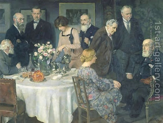

Shevuot (Oaths) 35 - Various Verbiages of Oath
There are five cases when there is no liability for the false oath of testimony: where one testifies to a promise, not actual giving of money; where he adjures them to testify when they will know the testimony in the future; where he addressed himself to a whole group of people, without specifying the witnesses; where their testimony would be hearsay or otherwise invalid; where he sent his slave to adjure the witnesses, or if it was the defendant, not the claimant, who adjured them.
If one said, "I adjure you," "I command you," "I bind you" (to testify) - the witnesses are liable.
If they swore by heaven and earth, then they are not liable. However, if they swore by "Lord," by the Tetragrammaton, by the "Lord of Hosts," "Compassionate," "Merciful," "Slow to Anger," "Abundantly Kind," or by any of the subordinate Names of God - they are liable.
Art: Jules Alexandre Grun - A Group Of Artists